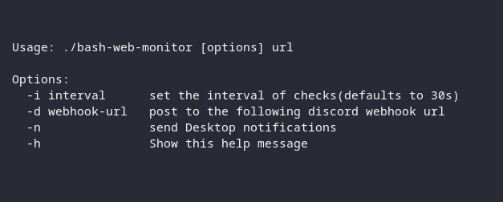

Hello 👋
I'm Talal, I'm 17 years old, just finished Highschool and looking forward to get into IT.
I like Linux, Open-source and C programming; i'm a Newbie though, please have patience 👍
If you have any questions, you're free to hit me up.
Projects
Bash web monitor
Monitor websites with a simple bash script
Contact
E-mailMastadon
Github